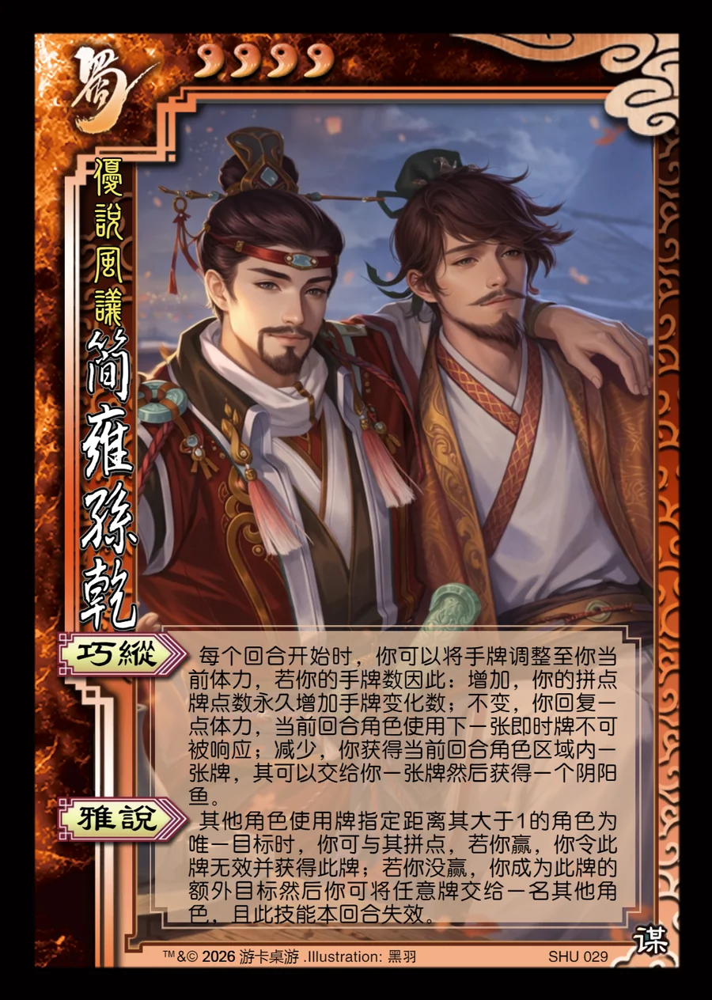

点击卡面查看大图
蜀
简雍孙乾
♥4优说风议
巧纵
每个回合开始时，你可以将手牌调整至你当前体力，若你的手牌数因此：增加，你的拼点牌点数永久增加手牌变化数；不变，你回复一点体力，当前回合角色使用下一张即时牌不可被响应；减少，你获得当前回合角色区域内一张牌，其可以交给你一张牌然后获得一个阴阳鱼。
雅说
其他角色使用牌指定距离其大于1的角色为唯一目标时，你可与其拼点，若你赢，你令此牌无效并获得此牌；若你没赢，你成为此牌的额外目标然后你可将任意牌交给一名其他角色，且此技能本回合失效。